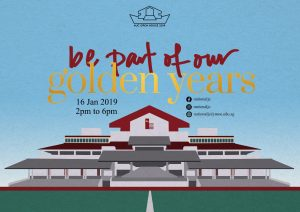

Events
-
30 Jan 2019
STaR Symposium
After nine months of  hard work, we will stage the the annual STaR Symposium on 30 January 2019 to recognise the efforts of research mentors, teachers and students under NJC’s STaR programme.
This year, our guest-of-honour for the event is Mr Ricky Lin, Founder and CEO of Life3 Biotech, Vice-Chairman of SG Health Committee, and District Councillor of Southeast CDC. He will be sharing his insights during the STaR Symposium Awards Ceremony.
-
25 Jan 2019
Gratitude Amplified In Action
“Gratitude Amplified In Action (G.A.I.A)”¬† Values in Action (VIA) Symposium.¬† This symposium is organised for SH1/JC1 students from schools across Singapore who will start their JC education in 2019.¬† The symposium will focus on:
- Issues on ageing population and the impact on Singapore; and
- How youths can play a part in supporting seniors towards active ageing.
-
16 Jan 2019
2019 NJC Open House for Prospective JC Students

More than 1800 visitors were at our Open House.  Thanks to all staff and students who have worked hard to welcome our visitors.
Service with Honour
-
07 Jan 2019
Semester – Term 1
Start of the Term 1 in 2019.
-
05 Nov 2018
2018 GCE A-Level Examinations
Our best wishes to all NJCians taking the 2018 GCE A-Level Examinations.¬† “Fighting”
-
18 Oct 2018
Deepavali Celebrations 2018
NJC ILDDS cordially invites you to College Deepavali Celebrations 2018!

You are invited to attend this concert that the ILDDS members have been working hard on for the past few months. The concert will take place at¬†LT5on¬†Thursday, 18th October¬†2018 at¬†7.40am. After the concert you can indulge in our delicious Indian delicacies, so don’t miss out!Please wear traditional Indian costumes if possible!
Please find the attached image file for the official invitation.
Thank you!
Dassiah Victor John
Senior Teacher -
13 Oct 2018
Junior High Open House 2018
At NJC, we believe in fulfilling your constantly evolving learning needs and nurturing you to be a well-rounded individual who will serve with honour. We believe in making every experience for you enriching and memorable.
If you are looking for the space to stretch your limits and develop your potential, join us!
Sign up for our Open House Schools Tours, and be part of our pride!
Tour Schedule*
School Tour Session 1 (9am to 10am)
School Tour Session 2 (9.15am to 10.15am)
School Tour Session 3 (9.30am to 10.30am)
School Tour Session 4 (9.45am to 10.45am)
School Tour Session 5 (10am to 11am)
School Tour Session 6 (10.15am to 11.15am)
School Tour Session 7 (10.30am to 11.30am)
Our tours begin at the NJC Atrium. Each tour session will take you to different parts of the campus (including the NJC Boarding School). You may attend an optional Question & Answer session and visit the academic and CCA booths after your tour. Please arrive at least 15 minutes before the scheduled tour time for registration.
* We seek your understanding in that spaces for the school tours are provided on a first-come first-served basis.
To ensure that every visitor enjoy a fulfilling experience in the tour, we kindly request that there are at most 3 visitors per sign-up, in order to keep the tour group size manageable.
Please sign up for the tour here. The closing date for the application for a tour is 10 October 2018 (Wednesday), 5pm. All tour applications will be confirmed via email.
Do visit our website www.nationaljc.moe.edu.sg regularly for updates.
-
02 Aug 2018
The National Dream (NJC’s Original Musical)
Celebrating Fifty Years as Singapore’s first Junior College
National Junior College will be celebrating fifty years this coming August, with the staging of an original musical involving current students across both its Secondary and Junior College sections, alumni, and teachers.
The musical, titled “The National Dream” follows the journey of a student of the College, and is set against the backdrop of fifty years of NJC’s history, and its milestone events, including the move from the old campus to the current premises, as well as the introduction of the 6-year Integrated Programme.
With story, script and score written by teachers, and cast and crew comprising current students and alumni, the musical is a celebration of NJC’s development over the years, as the nation’s first Junior College. It also celebrates fifty years of the Junior College, existing as a pre-University intuition integral within Singapore’s educational landscape. Alumni Rani Singam, one of Singapore’s foremost jazz singers, will also be performing during the musical.
The musical will be held on 2 August as the Esplanade Theatre.
Date: 2 August 2018
Time: 7:30 pm – 9:30 pm
Venue: Esplanade РTheatres on the Bay
1 Esplanade Drive, Singapore 038981Ticketing:Follow us on: